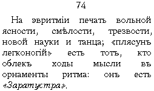
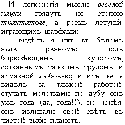
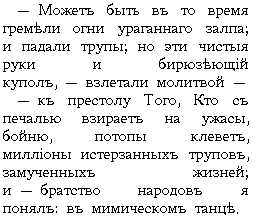
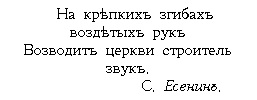
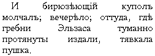
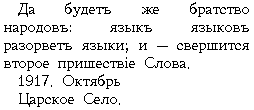

Glossolalia (Section 74)
GLOSSOLALIA

On eurythmy there is the imprint of free-willed clarity, bravery, sobriety, of a new science and of dance; the "light-footed dancer" is the one, who shrouds the steps of thought in the designs of rhythm: he is "Zarathustra."

And the lightfootedness of thought of the joyful science comes nearer not in the pace of treatises, but in a swarm of those flying, playing with veils -- I saw them in the white carved hall: under the turquoised cupola, fabricated with great effort and diamondy love; and I saw them at the hard labor: they had been beating with hammers on the oak already for years (yes, years!!); but, growing young, they poured out their light into the pure swell of the planets.

-- At that time the fires of a hurricane's salvo could have been roaring; and corpses could have been falling; but these pure arms and the turquoise cupola, --flew up in a prayer --
-- to the throne of the One, Who gazed with sadness at the horrors, butchery, floods of curses, millions of tattered corpses, of tortured lives; and -- I comprehended the brotherhood of peoples: it is in the mimical dance.

Constructor sound raises churches to the sky.

And the turquois cupola was silent; it was turning evening; thence, where the crests of Alsace extended cloudily from the distance, a cannon yelped.

There will come the brotherhood of peoples: lingua linguarum will rip apart our tongues; and -- the second coming of the Word will be consummated.
1917. October